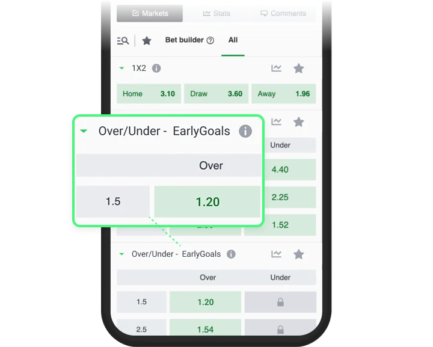
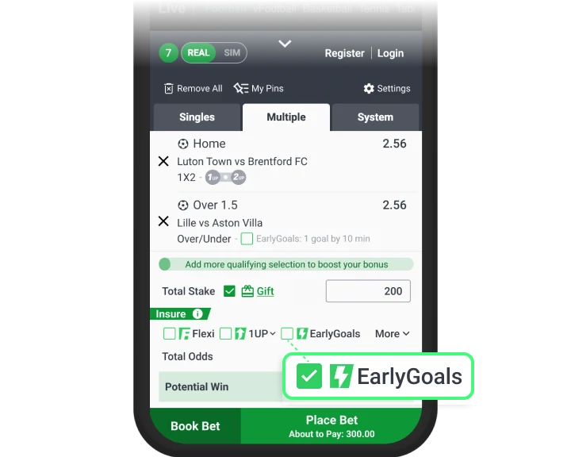
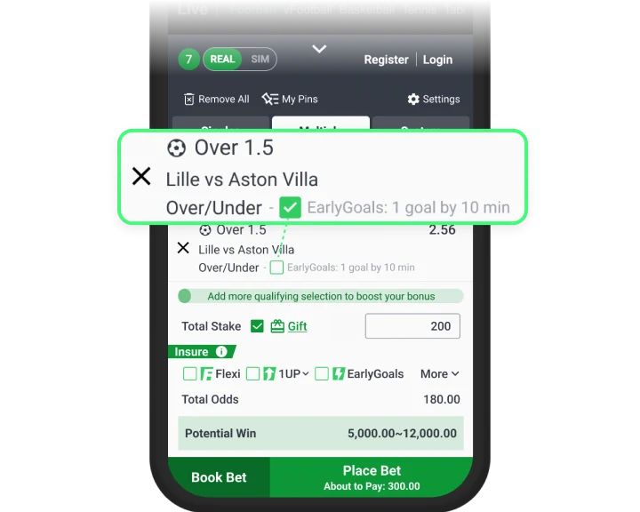
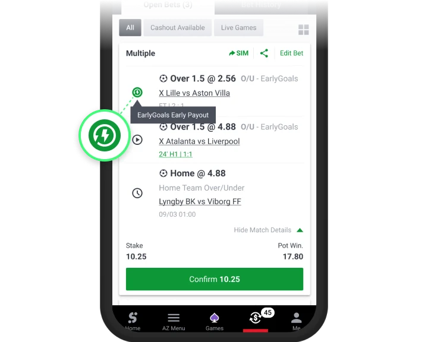

Get paid before the game’s even over! With EarlyGoals, you can celebrate faster. Your pre-match Over goals bet can settle instantly:
⏱️ Over 1.5: Paid if 1 goal is scored by 10 min
⏱️ Over 2.5: Paid if 2 goal is scored by 30 min
⏱️ Over 3.5: Paid if 3 goal is scored by 50 min
Here's how it works :
A separate EarlyGoals market is now available. The Under market follows the usual settlement rules.

In the Betslip, you can apply the EarlyGoals option to all eligible selections by turning on the EarlyGoals checkbox.

You can also turn the EarlyGoals option on or off for each selection individually.

You can spot your EarlyGoals selections in Open Bets and Bet History by the EarlyGoals icon.

Terms and Conditions
EarlyGoals meaning in betting - EarlyGoals refers to a feature that settles Over/Under bets early , if a number of goals are scored by a certain minute
The EarlyGoals feature applies exclusively to Over 1.5, Over 2.5 and Over 3.5 selections in football leagues supporting this innovative offering
Your selection would settle immediately, in cases where: for Over 1.5 - there is 1 goal scored by 9:59 min of the match; for Over 2.5 - there are 2 goals scored by 29:59 min of the match; for Over 3.5 - there are 3 goals scored by 49:59 min of the match
Available on pre-match bets only
If the EarlyGoals trigger isn’t met, your selection will settle as a normal Over/Under bet
Settlement of EarlyGoals feature bets is subject to the final decision of the company, any disputes will be resolved on our rules and terms
We retain the right to interpret, modify, or cancel this feature